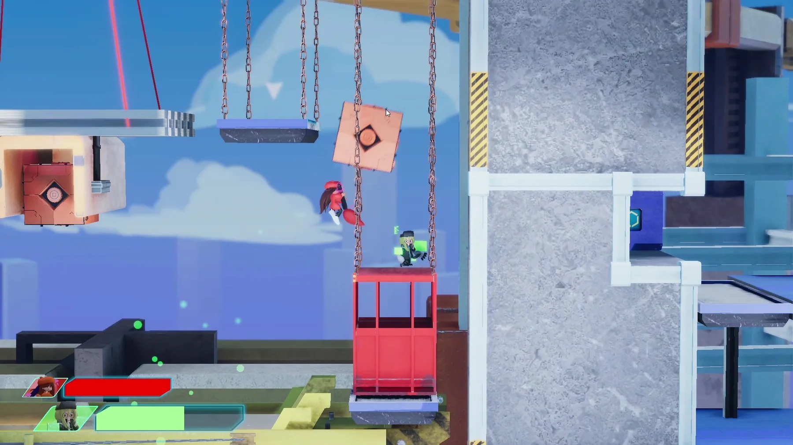
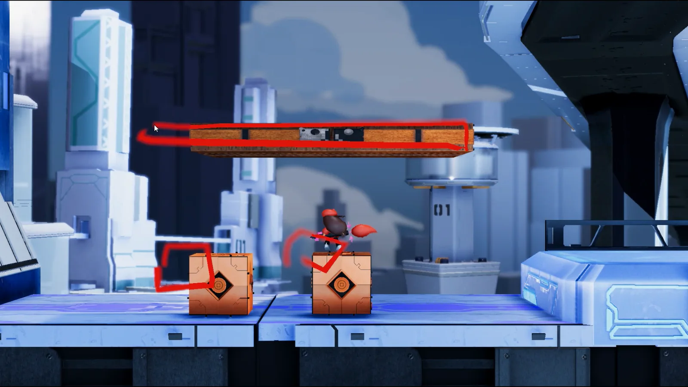
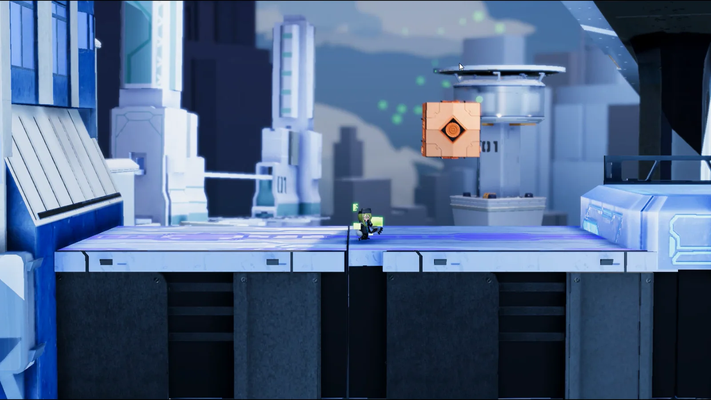
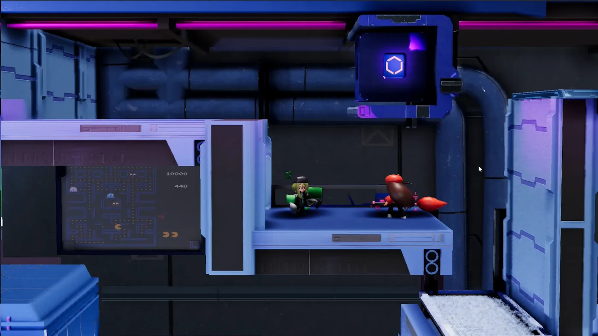
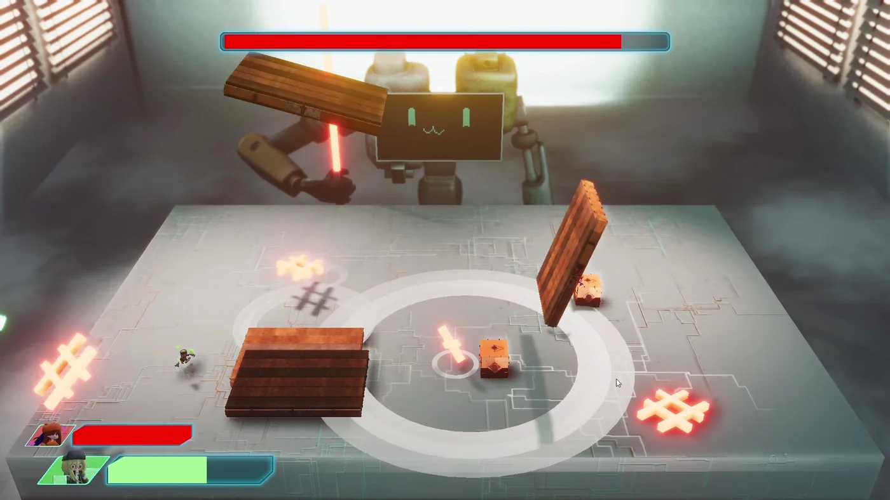
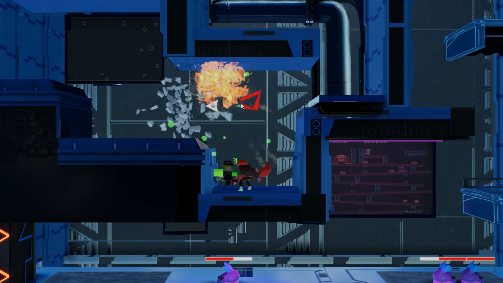

核心 Gameplay
建立雙角色的移動、攻擊與能力流程，將輸入、角色狀態及場景互動串成完整操作循環。
PlayerController / Skill / AttackGAME PRODUCER 2
主要程式負責人

Game Producer 2 是一款 PC 雙人連線合作動作解謎遊戲。2021/07–2022/06，以 Unity 2019.4.41f2、C# 與 Photon PUN 進行開發；由三人團隊完成，作品入圍 2022 新一代設計展。
玩法與關卡概念由團隊共同設計；我主要負責程式實作、除錯與系統整合。
建立雙角色的移動、攻擊與能力流程，將輸入、角色狀態及場景互動串成完整操作循環。
PlayerController / Skill / Attack以 Photon PUN 處理玩家生成、角色識別、物件控制權與狀態同步，支援雙人共同解謎。
NetworkPlayer / PlayerManager / Ownership將角色能力接入可破壞物件、合作機關、敵人與 Boss，從單一功能整合成可遊玩的關卡流程。
Mechanic / Enemy / Boss負責跨角色、物理與網路系統的整合測試，針對權限、碰撞與多人狀態進行除錯。
Gameplay × Physics × Networking
Artist 能力
記錄玩家繪製路徑，依路徑資料生成可互動物件，讓生成結果直接參與關卡解謎。

Programmer 能力
選取場景物件後取得操作權限，處理移動、縮放與投擲，並同步狀態給另一名玩家。
將操作拆成「本機判定」與「網路同步」兩個階段，避免未取得控制權的玩家直接改寫同一個物件狀態。
角色能力不只在獨立測試場景運作，還必須與關卡元件、敵人行為及雙人合作條件共同整合。



保留當年實作脈絡，同時說明如果現在重做，我會如何降低耦合並提升可維護性。
以較集中的 MonoBehaviour 快速串接輸入、角色行為、動畫與互動，能迅速完成玩法驗證；但功能持續增加後，狀態與責任容易互相牽連。
目前先保留結構示意；取得可公開版本後，再替換為當年真實原始碼片段。
將輸入、角色能力、物件互動與網路同步拆成清楚的責任邊界，讓本機規則可獨立驗證，網路層只處理權限與狀態傳遞。
集中註冊與解除，避免切換角色或場景後重複監聽。
分離 Input、Ability、Interaction 與 Presentation。
先定義本機規則，再由同步層傳遞權限與狀態。
從完成系統，
到建立可維護的系統。